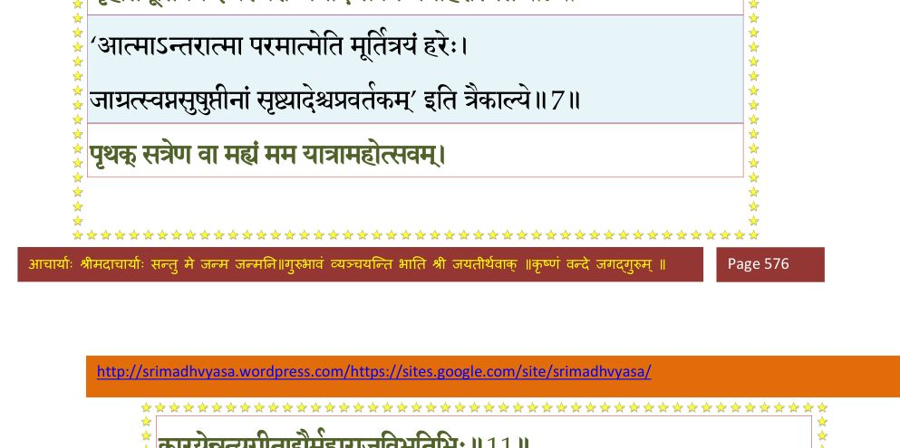
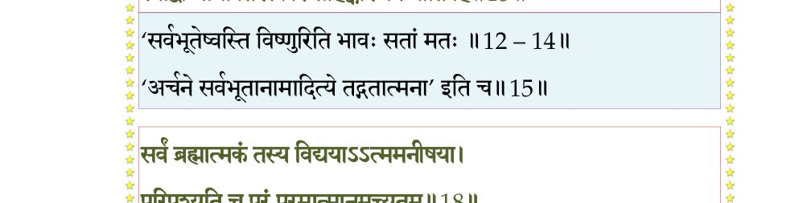
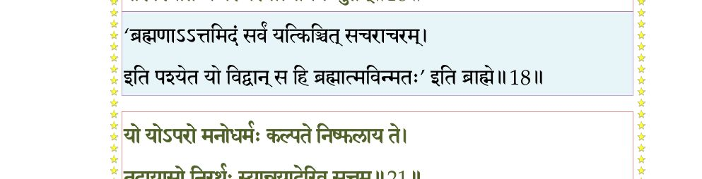
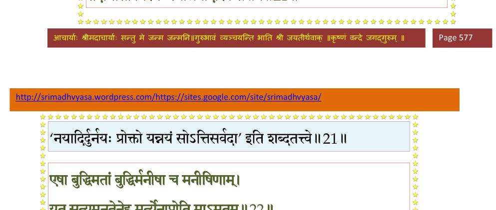
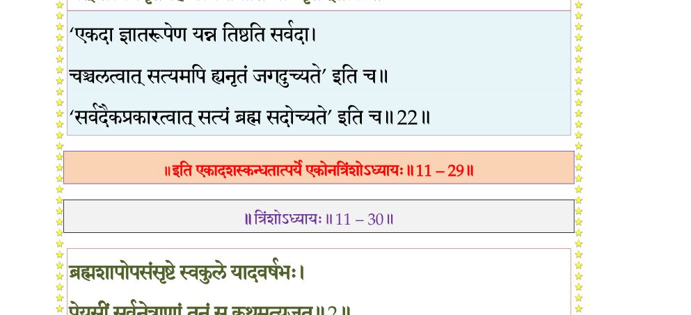

स्कन्ध 11 · अध्याय 29
श्लोक १
उद्धव उवाच–
सुदुश्चरामिमां मन्ये योगचर्यामनात्म(ना)नः ।
यथाऽञ्जसा पुमान् सिध्येत् तन्मे ब्रूह्यञ्जसाऽच्युत।। १ ।।
सुदुश्चरामिमां मन्ये योगचर्यामनात्म(ना)नः ।
यथाऽञ्जसा पुमान् सिध्येत् तन्मे ब्रूह्यञ्जसाऽच्युत।। १ ।।
श्लोक २
प्रायशः पुण्डरीकाक्ष युञ्जतो योगिनो मनः ।
विषीदत्यसमाधानान्मौनसंयमकर्शितम् ।। २ ।।
विषीदत्यसमाधानान्मौनसंयमकर्शितम् ।। २ ।।
श्लोक ५
अथो त आनन्ददुघं पदाम्बुजं हंसाः श्रयेरन्नरविन्दलोचन ।
सुखं(तु) च विश्वेश्वर योगकर्मभिः त्वन्माययाऽमी विहता न मानिनः ।।
किं चित्रमच्युत तवैतदशेषबन्धोर्दासेष्वनन्यशरणेषु यदात्मदस्त्वम् ।
योऽरोचयश्च पशुपैः स्वयमीश्वराणां श्रीमत्किरीटमणिघट्टितपादपीठः ।।
तं त्वाऽखिलात्मदयितेश्वरमाश्रितानां
सर्वार्थदं सुकृतविद् विसृजेत को नु ।
को वा भजेत् किमपि विस्मृतचित्तवृत्तिः
किं वा न वेद तव पादरजोऽमृताम्भः ।। ५ ।।
सुखं(तु) च विश्वेश्वर योगकर्मभिः त्वन्माययाऽमी विहता न मानिनः ।।
किं चित्रमच्युत तवैतदशेषबन्धोर्दासेष्वनन्यशरणेषु यदात्मदस्त्वम् ।
योऽरोचयश्च पशुपैः स्वयमीश्वराणां श्रीमत्किरीटमणिघट्टितपादपीठः ।।
तं त्वाऽखिलात्मदयितेश्वरमाश्रितानां
सर्वार्थदं सुकृतविद् विसृजेत को नु ।
को वा भजेत् किमपि विस्मृतचित्तवृत्तिः
किं वा न वेद तव पादरजोऽमृताम्भः ।। ५ ।।
श्लोक ६
नैवोपयान्त्यपचितिं कवयस्तवेश
ब्रह्मायुषाऽपि (ब्रह्मादयोऽपि) नतमूर्द्ध सदा स्मरन्तः ।
योऽन्तर्बहिस्तनुभृतामशुभं विधुन्व-
न्नाचार्यचैत्यवपुषा स्वगतिं व्यनंक्षि ।। ६ ।।
ब्रह्मायुषाऽपि (ब्रह्मादयोऽपि) नतमूर्द्ध सदा स्मरन्तः ।
योऽन्तर्बहिस्तनुभृतामशुभं विधुन्व-
न्नाचार्यचैत्यवपुषा स्वगतिं व्यनंक्षि ।। ६ ।।
श्लोक ७
श्री शुक उवाच–
इत्युद्धवेनात्यनुरक्तचेतसा पृष्टो जगत्क्रीडनकः स्वशक्तिभिः ।
गृहीतमूर्तित्रय ईश्वरेश्वरो जगाद सप्रेम मनोहरस्मितः।। ७ ।।
इत्युद्धवेनात्यनुरक्तचेतसा पृष्टो जगत्क्रीडनकः स्वशक्तिभिः ।
गृहीतमूर्तित्रय ईश्वरेश्वरो जगाद सप्रेम मनोहरस्मितः।। ७ ।।
भागवततात्पर्यनिर्णय

श्लोक ८
श्रीभगवानुवाच–
हन्त ते वर्णयिष्यामि मम धर्मान् सुमङ्गलान् ।
यान् शुद्धानाचरन् मर्त्यो मृत्युं जयति दुर्जयम् ।। ८ ।।
हन्त ते वर्णयिष्यामि मम धर्मान् सुमङ्गलान् ।
यान् शुद्धानाचरन् मर्त्यो मृत्युं जयति दुर्जयम् ।। ८ ।।
श्लोक ९
कुर्यात् सर्वाणि कर्माणि मदर्थं शनकैः स्मरन् ।
मय्यर्पितमनश्चित्तो मद्धर्मात्ममनोरतिः ।। ९ ।।
मय्यर्पितमनश्चित्तो मद्धर्मात्ममनोरतिः ।। ९ ।।
श्लोक १०
देशान् पुण्यान् संश्रयेत मद्भक्तैः साधुभिः श्रितान् ।
देवासुरमनुष्येषु मद्भक्ताचरितानि च ।। १० ।।
देवासुरमनुष्येषु मद्भक्ताचरितानि च ।। १० ।।
श्लोक ११
पृथक् सत्रेण वा मह्यं मम यात्रामहोत्सवम् ।
कारयेन्नृत्यगीताद्यैर्महाराजविभूतिभिः ।। ११ ।।
कारयेन्नृत्यगीताद्यैर्महाराजविभूतिभिः ।। ११ ।।
भागवततात्पर्यनिर्णय
श्लोक १२
मामेव सर्वभूतेषु बहिरन्तरवस्थितम् ।
ईक्षे(यजे)तात्मनि चात्मानं यथा खममलाशयः ।। १२ ।।
ईक्षे(यजे)तात्मनि चात्मानं यथा खममलाशयः ।। १२ ।।
भागवततात्पर्यनिर्णय
श्लोक १३
इति सर्वाणि भूतानि मद्भावेन महाद्युते ।
सभाजयेन्मन्यमानो ज्ञानं केवलमाश्रयन् ।। १३ ।।
सभाजयेन्मन्यमानो ज्ञानं केवलमाश्रयन् ।। १३ ।।
भागवततात्पर्यनिर्णय
श्लोक १४
ब्राह्मणे पुल्कसे स्तेने ब्रह्मण्यर्के स्फुलिङ्गके ।
अक्रूरे क्रूरके चैव समदृक् पण्डितो मतः ।। १४ ।।
अक्रूरे क्रूरके चैव समदृक् पण्डितो मतः ।। १४ ।।
भागवततात्पर्यनिर्णय
श्लोक १५
नरेष्वभीक्ष्णं मद्भावः पुंसो भावयतोऽचिरात् ।
स्याद्वा माया तिरस्कारं साहंकाराऽपि याति हि ।। १५ ।।
स्याद्वा माया तिरस्कारं साहंकाराऽपि याति हि ।। १५ ।।
भागवततात्पर्यनिर्णय

श्लोक १६
विसृज्य स्वयमात्मस्थां दृश्यव्रीडां च दैहिकीम् ।
प्रणमेद् दण्डवद् भूमावाश्वचण्डालगोखरम् ।। १६ ।।
प्रणमेद् दण्डवद् भूमावाश्वचण्डालगोखरम् ।। १६ ।।
श्लोक १७
यावत् सर्वेषु भूतेषु मद्भावो नोपयुज्यते ।
तावदेवमुपासीत वाङ्मनःकायवृत्तिभिः ।। १७ ।।
तावदेवमुपासीत वाङ्मनःकायवृत्तिभिः ।। १७ ।।
श्लोक १८
सर्वं ब्रह्मात्मकं तस्य विद्ययाऽऽत्ममनीषया ।
परिपश्यन्ति च परं परमात्मानमच्युतम् ।। १८ ।।
परिपश्यन्ति च परं परमात्मानमच्युतम् ।। १८ ।।
भागवततात्पर्यनिर्णय

श्लोक १९
अयं हि सर्वकल्पानां सध्रीचीनो मतो मम ।
मद्भावः सर्वभूतेषु मनोवाक्कायकर्मभिः ।। १९ ।।
मद्भावः सर्वभूतेषु मनोवाक्कायकर्मभिः ।। १९ ।।
श्लोक २०
नह्यङ्गोपक्रमे ध्वंसो न धूरस्योद्धवाण्वपि ।
मया व्यवसितं सम्यङ् निर्गुणत्वादनाशिषः ।। २० ।।
मया व्यवसितं सम्यङ् निर्गुणत्वादनाशिषः ।। २० ।।
श्लोक २१
यो योऽपरो मनोधर्मः कल्पते निष्फलाय ते ।
तदायासो निरर्थः स्यान्नयादेरिव सत्तम ।। २१ ।।
तदायासो निरर्थः स्यान्नयादेरिव सत्तम ।। २१ ।।
भागवततात्पर्यनिर्णय

श्लोक २२
एषा बुद्धिमतां बुद्धिर्मनीषा च मनीषिणाम् ।
यत् सत्यमनृतेनेह मर्त्येनाप्नोति माऽमृतम् ।। २२ ।।
यत् सत्यमनृतेनेह मर्त्येनाप्नोति माऽमृतम् ।। २२ ।।
भागवततात्पर्यनिर्णय

श्लोक २३
एष तेऽभिहितः कृत्स्नो ब्रह्मवादस्य सङ्ग्रहः ।
समासव्यासविधिना देवानामपि दुर्गमः ।। २३ ।।
समासव्यासविधिना देवानामपि दुर्गमः ।। २३ ।।
श्लोक २४
अभीक्ष्णशस्ते गदितं ज्ञानं विस्पष्टयुक्तिमत् ।
एतद् विज्ञाय मुच्येत पुरुषो नष्टसंशयः ।। २४ ।।
एतद् विज्ञाय मुच्येत पुरुषो नष्टसंशयः ।। २४ ।।
श्लोक २५
सुविविक्तं तव प्रश्नं मयोक्तमपि धारयन् ।
सनातनं ब्रह्म गुह्यं परब्रह्माधिगच्छति ।। २५ ।।
सनातनं ब्रह्म गुह्यं परब्रह्माधिगच्छति ।। २५ ।।
श्लोक २६
य एतन्मम भक्तेषु सम्प्रदद्यात् सुपुष्कलम् ।
तस्याहं ब्रह्मदायस्य ददाम्यात्मानमात्मना।। २६ ।।
तस्याहं ब्रह्मदायस्य ददाम्यात्मानमात्मना।। २६ ।।
श्लोक २७
य एतत् समधीयीत पवित्रं परमं शुचि ।
स पूयेताहरहर्मां ज्ञानदीपेन दर्शयन् ।। २७ ।।
स पूयेताहरहर्मां ज्ञानदीपेन दर्शयन् ।। २७ ।।
श्लोक २८
य एतच्छ्रद्धया नित्यमव्यग्रं शृणुयान्नरः ।
मयि भक्तिं परां कुर्वन् कर्मभिर्न स बध्यते ।। २८ ।।
मयि भक्तिं परां कुर्वन् कर्मभिर्न स बध्यते ।। २८ ।।
श्लोक २९
अप्युद्धव त्वया ब्रह्म सखे समुपधारितम् (समवधारितम्) ।
अपि ते विगतो मोहः शोकश्चासौ मनोभवः ।। २९ ।।
अपि ते विगतो मोहः शोकश्चासौ मनोभवः ।। २९ ।।
श्लोक ३०
नैतत् त्वया दाम्भिकाय नास्तिकाय शठाय च ।
अशुश्रूषोरभक्ताय दुर्विनीताय दीयताम् ।। ३० ।।
अशुश्रूषोरभक्ताय दुर्विनीताय दीयताम् ।। ३० ।।
श्लोक ३१
एतैर्दोषैर्विहीनाय ब्रह्मण्याय प्रियाय च ।
साधवे शुचये ब्रूयाद् भक्तिः स्याच्छूद्रयोषिताम् ।। ३१ ।।
साधवे शुचये ब्रूयाद् भक्तिः स्याच्छूद्रयोषिताम् ।। ३१ ।।
श्लोक ३२
नैतद् विज्ञाय जिज्ञासोर्ज्ञातव्यमवशिष्यते ।
पीत्वा पीयूषममृतं पातव्यं नावशिष्यते ।। ३२ ।।
पीत्वा पीयूषममृतं पातव्यं नावशिष्यते ।। ३२ ।।
श्लोक ३३
ज्ञाने कर्मणि योगे च वार्तायां दण्डधारणे ।
यावानर्थो नृणां तात तावान् मोहश्चतुर्विधः ।। ३३ ।।
यावानर्थो नृणां तात तावान् मोहश्चतुर्विधः ।। ३३ ।।
श्लोक ३४
मर्त्यो यदा त्यक्तसमस्तकर्मा निवेशितात्मा विचिकीर्षितो मे ।
तदाऽमृतत्वं प्रतिपद्यमानो मयाऽऽत्मभूयाय च कल्पतेऽसौ।। ३४ ।।
तदाऽमृतत्वं प्रतिपद्यमानो मयाऽऽत्मभूयाय च कल्पतेऽसौ।। ३४ ।।
श्लोक ३५
श्री शुक उवाच–
स एवमादर्शितयोगमार्गस्तदोत्तमश्लोकवचो निशम्य ।
बद्धाञ्जलिः प्रीत्युपरुद्धकण्ठो न किञ्चिदूचेऽश्रुपरिप्लुताक्षः।। ३५ ।।
स एवमादर्शितयोगमार्गस्तदोत्तमश्लोकवचो निशम्य ।
बद्धाञ्जलिः प्रीत्युपरुद्धकण्ठो न किञ्चिदूचेऽश्रुपरिप्लुताक्षः।। ३५ ।।
श्लोक ३६
विष्टभ्य चित्तं प्रणयेन पूर्णं धैर्येण राजन् बहुमन्यमानः ।
कृताञ्जलिः प्राह यदुप्रवीरं शीर्ष्णा स्पृशंस्तच्चरणारविन्दम्।। ३६ ।।
कृताञ्जलिः प्राह यदुप्रवीरं शीर्ष्णा स्पृशंस्तच्चरणारविन्दम्।। ३६ ।।
श्लोक ३७
उद्धव उवाच–
विद्रावितो मोहमयोऽन्धकारो य आश्रितो मे तव सन्निधानात् ।
विभावसोः किन्नु समीपगस्य शीतं तमोऽभिप्रभवत्यजाद्य।। ३७ ।।
विद्रावितो मोहमयोऽन्धकारो य आश्रितो मे तव सन्निधानात् ।
विभावसोः किन्नु समीपगस्य शीतं तमोऽभिप्रभवत्यजाद्य।। ३७ ।।
श्लोक ३८
प्रवर्धिता मे भवताऽनुकम्पिता दत्तो हि विज्ञानमयः प्रदीपः ।
हित्वा कृतज्ञस्तव पादमूलं कोऽज्ञः समीयाच्छरणं त्वदन्यम्।। ३८ ।।
हित्वा कृतज्ञस्तव पादमूलं कोऽज्ञः समीयाच्छरणं त्वदन्यम्।। ३८ ।।
श्लोक ३९
वृक्णश्च मे सुदृढः स्नेहपाशो
(वृक्णश्च रूढः स्नेहपाशो मदीयः) दाशार्हवृष्ण्यन्धकसात्वतेषु ।
प्रसारितः सृष्टिविवृद्धये त्वया स्वमायया ह्यात्मसुबोधहेतिना ।।३९।।
(वृक्णश्च रूढः स्नेहपाशो मदीयः) दाशार्हवृष्ण्यन्धकसात्वतेषु ।
प्रसारितः सृष्टिविवृद्धये त्वया स्वमायया ह्यात्मसुबोधहेतिना ।।३९।।
श्लोक ४०
नमोऽस्तु ते महायोगिन् प्रपन्नमनुशाधि माम् ।
यथा त्वच्चरणाम्भोजे रतिः स्यादनपायिनी ।। ४० ।।
यथा त्वच्चरणाम्भोजे रतिः स्यादनपायिनी ।। ४० ।।
श्लोक ४१
श्रीभगवानुवाच–
गच्छोद्धव मयाऽऽदिष्टो बदर्याख्यं मदाश्रमम् ।
तत्र मत्पादतीर्थोदैः स्नानोपस्पर्शनैः शुचिः।। ४१ ।।
गच्छोद्धव मयाऽऽदिष्टो बदर्याख्यं मदाश्रमम् ।
तत्र मत्पादतीर्थोदैः स्नानोपस्पर्शनैः शुचिः।। ४१ ।।
श्लोक ४२
ईक्षयाऽलकनन्दाया विधूताशेषकल्मषः ।
वसानो वल्कलान्यङ्ग वन्यभुक् सुखनिःस्पृहः।। ४२ ।।
वसानो वल्कलान्यङ्ग वन्यभुक् सुखनिःस्पृहः।। ४२ ।।
श्लोक ४३
तितिक्षुर्द्वन्द्वमात्राणां सुशीलः संयतेन्द्रियः ।
शान्तः समाहितधिया ज्ञानविज्ञानसंयुतः ।। ४३ ।।
शान्तः समाहितधिया ज्ञानविज्ञानसंयुतः ।। ४३ ।।
श्लोक ४४
मत्तोऽनुशिक्षितं यत्ते विविक्तमनुभावयन् ।
मय्यावेशितवाक्चित्तो मद्धर्मनिरतो भव ।। ४४ ।।
मय्यावेशितवाक्चित्तो मद्धर्मनिरतो भव ।। ४४ ।।
श्लोक ४५
अतिक्रम्य गतीस्तिस्रो मामेष्यसि ततः परम् ।। ४५ ।।
श्लोक ४६
श्रीशुक उवाच–
स एवमुक्तो हरिमेधसोद्धवः प्रदक्षिणं तं परिवृत्य पादयोः ।
शिरो निधायाश्रुकलाभिरार्द्रधीः सिञ्चन् पदद्वन्द्वमथोऽनुचक्रमे
(थो न चक्रमे) ।। ४६ ।।
स एवमुक्तो हरिमेधसोद्धवः प्रदक्षिणं तं परिवृत्य पादयोः ।
शिरो निधायाश्रुकलाभिरार्द्रधीः सिञ्चन् पदद्वन्द्वमथोऽनुचक्रमे
(थो न चक्रमे) ।। ४६ ।।
श्लोक ४७
सुदुस्त्यजस्नेहवियोगकातरो न शक्नुवंस्तं परिहर्तुमातुरः ।
कृच्छ्रं ययौ मूर्धनि भर्तृपादुके विभ्रन्नमस्कृत्य ययौ पुनःपुनः ।।४७।।
कृच्छ्रं ययौ मूर्धनि भर्तृपादुके विभ्रन्नमस्कृत्य ययौ पुनःपुनः ।।४७।।
श्लोक ४८
ततस्तमन्तर्हृदि सन्निवेश्य गतो महाभागवतो विशालाम् ।
यथोपदिष्टं जगदेकबन्धुना तपः समास्थाय हरेरगाद् गतिम्।। ४८ ।।
यथोपदिष्टं जगदेकबन्धुना तपः समास्थाय हरेरगाद् गतिम्।। ४८ ।।
श्लोक ४९
यदे(य एत)तदानन्दसमुद्रसम्भृतं ज्ञानामृतं भागवताय भाषितम् ।
कृष्णेन योगेश्वरसेविताङ्घ्रिणा सच्छ्रद्धयाऽऽसेव्य जगद् विमुच्यते ।।४९।।
कृष्णेन योगेश्वरसेविताङ्घ्रिणा सच्छ्रद्धयाऽऽसेव्य जगद् विमुच्यते ।।४९।।
श्लोक ५०
भवभयमपहन्तुं ज्ञानविज्ञानसारं
निगमकुमुददभ्रं भृङ्गवद् वेद्यसारम् ।
अमृतमुदधिकल्पं पाययन् भृत्यवर्गान्
पुरुषऋषभमाद्यं विष्णुसंज्ञं नतोऽस्मि।। ५० ।।
निगमकुमुददभ्रं भृङ्गवद् वेद्यसारम् ।
अमृतमुदधिकल्पं पाययन् भृत्यवर्गान्
पुरुषऋषभमाद्यं विष्णुसंज्ञं नतोऽस्मि।। ५० ।।
।। इति श्रीमद्भागवते एकादशस्कन्धे एकोनत्रिंशोऽध्यायः ।।